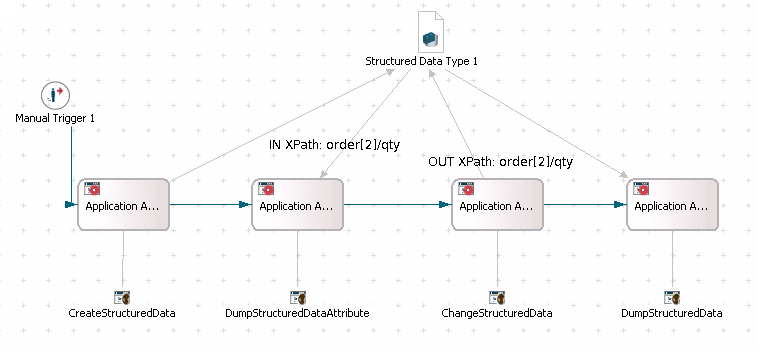

Java-based applications will see the results of dereferencing paths of data mappings on structured data types as
The following process model shows a series of method invocations of Java class methods where data from a data of structured data type are passed to and retrieved from these applications. The process model also displays IN and OUT data mappings wherever defined:

Hereby, the applications represent methods of Java classes as described below
public Map createStructuredDataCollections() throws ParseException
{
Map addressBaker = new HashMap();
addressBaker.put("street", "Baker");
Map addressNorth = new HashMap();
addressNorth.put("street", "North");
Map customer1 = new HashMap();
List addresses1 = new ArrayList();
addresses1.add(addressBaker);
addresses1.add(addressNorth);
customer1.put("address", addresses1);
customer1.put("name", "Smith");
Map customer2 = new HashMap();
List addresses2 = new ArrayList();
addresses2.add(addressNorth);
customer2.put("address", addresses2);
customer2.put("name", "James");
Map order1 = new HashMap();
order1.put("customer", customer1);
order1.put("qty", new Integer(100));
order1.put("ordernr", "N1");
Map order2 = new HashMap();
order2.put("customer", customer2);
order2.put("qty", new Integer(200));
order2.put("ordernr", "N2");
List orders = new ArrayList();
orders.add(order1);
orders.add(order2);
Map orderBook = new HashMap();
orderBook.put("date", XSD_DATE_TIME_FORMAT.parseObject("1979-04-07T01:02:03"));
orderBook.put("status", "OPEN");
orderBook.put("order", orders);
return orderBook;
}
public void dumpStructuredDataAttribute(int attribute) throws Exception
{
System.out.println("DumpStructuredDataApp called. Attribute is: " + attribute);
}
public void dumpStructuredDataAttribute(Date attribute) throws Exception
{
System.out.println("DumpStructuredDataApp(Date) called. Attribute is: " + attribute);
}
public int getChangedOrderQty() throws Exception
{
return 77;
}
public Map getChangedAddress(Map address)
{
address.put("street", "New Street");
return address;
}
public List getChangedAddresses(List oldAddresses)
{
for (Iterator i = oldAddresses.iterator(); i.hasNext(); )
{
Map oldAddress = (Map) i.next();
oldAddress.put("street", oldAddress.get("street")+" CHANGED");
}
Map additionalAddress = new HashMap();
additionalAddress.put("street", "MY NEW STREET");
oldAddresses.add(additionalAddress);
System.out.println("ChangeStructuredDataApp.getChangedAddress called, returning " + oldAddresses);
return oldAddresses;
}
The application DumpStructuredData dumps the whole structured data
public void dumpStructuredData(Map complexType) throws Exception
{
System.out.println("DumpStructuredDataApp called. ComplexType is: "+complexType);
}
public void dumpStructuredData(List complexTypes) throws Exception
{
System.out.println("DumpStructuredDataApp called. ComplexType List is: "+complexTypes);
}
public void dumpStructuredDataAttribute(int attribute) throws Exception
{
System.out.println("DumpStructuredDataApp called. Attribute is: "+attribute);
}
public void dumpStructuredDataAttribute(Date attribute) throws Exception
{
System.out.println("DumpStructuredDataApp(Date) called. Attribute is: "+attribute);
}
Structured data can be used in queries to retrieve process and activity instances, as described in the section Using Structured Data in Queries of the chapter Building Queries.
You can delete structured data by following ways:
So, if key-value pairs are provided for all elements of the structured data, but the value is either null or an empty string (string), 0 (number) or some other kind of empty value for the other supported xsd types, the row will be deleted.
For example,
Map<String, Object> dataMap = new HashMap<String , Object>(); dataMap = null; ActivityInstance activityInstance2 = workflowService.activateNextActivityInstanceForProcessInstance(startProcess.getOID()); workflowService.complete(activityInstance2.getOID(), "default", dataMap);